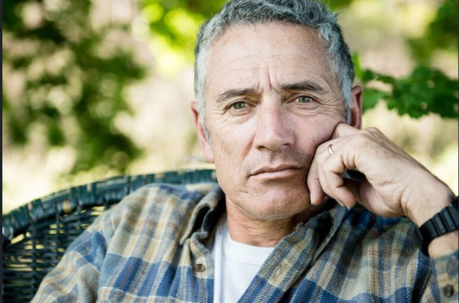

Experimentul care mi-a schimbat viața. Mi-am luat rămas bun de la hipertensiune și mulțumesc organizatorilor studiului
Fiecare medicament trebuie să treacă prin studii clinice înainte de a ieși la vânzare. Însă puțini oameni înțeleg cum apar și de ce motive sunt ghidați participanții lor. Toate detaliile ne-au spus de un bărbat de 52 de ani Roman Marcel, care timp de 10 luni a participat la studiul unui nou remediu pentru hipertensiune.
AVERTIZARE! La sfârșitul articolului veți găsi informații despre un nou remediu revoluționar care combate eficient hipertensiunea.
— Bună dimineața, Marcel! Spune-ne cum ai acceptat să participi la studiu? De ce ai ales un remediu pentru hipertensiune?
— Buna dimineata! Răspunsul este simplu - am fost de acord cu studiul medicamentului, pentru că sunt hipertonic. Și am descoperit asta din greșeală. Am vrut să alerg o jumătate de maraton (21 km) și a trebuit să obțin permisiunea unui terapeut. Desigur, nu mi-a dat voie să alerg. De asemenea, mi-a spus că am avut tensiune arterială mare de mulți ani. Și întotdeauna am crezut că durerea de cap și oboseala constantă sunt legate de munca mea grea!
Aveam 46 de ani la vremea aceea. Înainte de începerea studiului, am luat diferite tipuri de medicamente în fiecare dimineață timp de 8 ani. Tensiunea mea a variat de la 140/80 la 170/100 mmHg.
Mulți trăiesc așa și nu se plâng, dar m-am simțit ca un invalid. Eu, o persoană cu articulații sănătoase, mi-a fost interzis să alerg! În plus, am fost copleșit de ideea de a-mi otrăvi corpul cu medicamente pentru hipertensiune arterială pentru tot restul vieții. În plus, nici măcar nu m-au ajutat.
— Cum ai înțeles că nu ajută?
— Partea din spate a capului deseori mă durea, era o durere ascuțită în ochi, chiar durea să privesc. Și apoi într-o zi am simțit o durere severă bruscă în inimă, greață și amețeli. A fost o criză hipertensivă..
Am ajuns la spital cu o presiune sistolică de 180, m-au salvat. Medicul care m-a readus la viață a sugerat să iau parte la studiul unui remediu pentru hipertensiunea arterială.
— Ai fost de acord imediat? Cât de sigură este această procedură?
— Desigur, la început am avut îndoieli. Dar mi-au explicat în detaliu toate riscurile și etapele procedurii. Ei au spus că înainte de a trece la studii umane, produsul a fost testat într-un laborator pe culturi de celule umane și de șoarece. Au spus că sunt interesați și de succes. În plus, fiecare participant care a semnat formularul de consimțământ trebuie să primească o asigurare care poate acoperi orice daune cauzate. Dar cel mai important lucru - ceea ce mi-a trezit încrederea și m-a convins să particip - este o compoziție 100% naturală a produsului.
— Ai fost de acord și cercetările au început imediat?
— - Studiul a început după 4 luni. S-a petrecut mult timp pentru diverse teste, analize etc. Mi-au făcut o electrocardiogramă, mi-au măsurat tensiunea arterială de mai multe ori, au luat probe de sânge și urină, mi-au măsurat înălțimea și greutatea. Au controlat complet starea corpului meu și bunăstarea mea în timpul experimentului. Două săptămâni mai târziu, m-au sunat pe mine și alți mii de alți voluntari și mi-au spus că suntem în a treia etapă a studiului.
— Ce înseamnă „a treia fază”?
— - În prima etapă a studiului, voluntarii sănătoși determină modul în care medicamentul este suportat de oameni. În al doilea, doza este verificată pe pacienți. La a treia etapă - eficacitatea medicamentului este testată la sute de pacienți în comparație cu placebo sau analogi.
— Deci nu știai ce ți-au dat?
— Da, aceasta este ideea cheie a studiului. Din fericire, am fost printre cei care au luat acest medicament
— Cum a fost studiul?
— A fost necesar să iau 15-20 picături de două ori pe zi, timp de 1,5 luni. Prima lună am fost spitalizați una sau două zile în fiecare săptămână, apoi - când studiul s-a terminat. În restul timpului, a trebuit să respectăm cu strictețe toate prescripțiile medicilor: să limităm utilizarea alimentelor grase, să nu consumăm alcool, să nu fumăm și așa mai departe. În plus, a fost necesară măsurarea presiunii în fiecare zi dimineața și seara, precum și indicarea tuturor simptomelor într-o aplicație specială.
În zilele în care am fost la spital, am fost examinați în mod regulat, ne-au măsurat tensiunea arterială și au făcut analize de sânge și urină. Uneori nu ne hrăneau dimineața și ne lăsau flămânzi până la prânz - era dificil. La ora 7 dimineața, cu 30 de minute înainte de micul dejun, a fost luată prima picătură, iar după 15 minute au făcut analize de sânge și au măsurat tensiunea.

— Te-au ajutat picăturile? Cum s-a schimbat starea ta?
— În ciuda temerilor mele, am fost bine. După cea de-a doua săptămână, nu mai aveam dureri la nivelul gâtului , iar presiunea nu depășea 140. O lună mai târziu, nu mai exista disconfort în inima mea, s-a îmbunătățit vederea și tensiunea din ochi mi-a dispărut. A dispărut și respirația grea după efort fizic. Și după 1,5 luni, tensiunea arterială s-a stabilizat la 125/75 , am început să dorm bine și m-am simțit plin de energie.
Mi-a fost teamă că, după terminarea ciclului de admisie, hipertensiunea arterială va reveni. Dar au trecut peste 3 luni și mă simt sănătos !
— Știi numele produsului pe care l-ai testat?
— Da, au fost picăturile bazate pe extracte de plante 100% naturale
— Ai fost plătit să participi la studiu?
— Nu, nu mi-au plătit nimic. Doar participanții primei etape au primit bani. Dar compania a acoperit toate cheltuielile pentru transport, mese, teste și șederi în spital. Dar în nici un caz nu mă plâng! Am ceea ce nu puteți cumpăra cu bani - sănătate!
COMENTARIUL EXPERTULUI
Bordeanu Simion,
cardiolog, unul dintre organizatorii studiilor clinice de fază III
Hipertensiunea arterială este o boală gravă care afectează sistemul cardiovascular, creierul și rinichii și, de asemenea, crește riscul de a dezvolta infarct miocardic, accident vascular cerebral și insuficiență renală. De obicei, hipertensiunea arterială este aproape asimptomatică și este diagnosticată atunci când încep să apară complicații la alte organe.
De regulă, pacientul trebuie să ia 2 sau mai multe medicamente pentru hipertensiune pe parcursul vieții. O astfel de terapie este adesea însoțită de reacții adverse și agravează în continuare sănătatea pacientului.
Picăturile au fost create sub formă de monoremediere, care nu necesită produse suplimentare, deoarece are toate proprietățile necesare:
— îmbunătățește elasticitatea vasculară;
— are efect cumulativ;
— reduce nivelul colesterolului rău și previne scăderea nivelului de colesterol bun;
— are efect vasodilatant;
— normalizează activitatea inimii;
— elimină excesul de sare și apă din corp.
Picăturile au o unică pe bază de plante - extracte de păducel, hamei, coada de cal, câmp, sunătoare și flori de tei. Flavonoidele utile au efecte benefice asupra țesuturilor și celulelor. În timpul unui studiu lung, am constatat că ingredientele picăturilor au un efect de vindecare cuprinzător asupra vaselor de sânge și capilarelor: îmbunătățește funcționarea inimii și a sistemului nervos, precum și crește tonusul muscular.
Administrarea în curs de picături întărește pereții vaselor de sânge, stabilizează tensiunea arterială, elimină nervozitatea, lipsa respirației grele, dureri de cap și tinitus. Starea de spirit se îmbunătățește și somnul este normalizat. Important: ciclul nu numai că normalizează tensiunea arterială, ci și împiedică dezvoltarea bolilor cardiovasculare: atac de cord, accident vascular cerebral etc.
Roman Marcel a fost unul dintre cei 4035 de voluntari cu vârste cuprinse între 19 și 70 de ani, pe care i-am selectat pentru procesul de fază III . Acest grup a testat picăturile noastre. A existat și un grup care a testat analogii. Toți participanții au aflat din ce grup aparțin numai după finalizarea studiului.
Timp de 10 luni, le-am monitorizat cu atenție starea de sănătate, am efectuat teste, am măsurat tensiunea arterială în diferite momente și în diferite circumstanțe: stând pe un scaun, stând în picioare, înainte și după antrenament.
Ca urmare a studiului, am confirmat eficacitatea și lipsa efectului de retragere. După o lună de luare a produsului, 70% dintre participanți au îmbunătățit valoarea presiunii, care a scăzut la 135/80 mm RT. Și după 2 săptămâni, deja 100% dintre subiecți au atins valori normale ale presiunii. Presiunea arterială medie a fost de 125/75 mmHg. Astfel, la 1,5 luni după ciclul , presiunea a fost complet stabilizată, iar cu măsurătorile zilnice a fost întotdeauna normală, ca la o persoană sănătoasă. Nu au fost identificate efecte secundare.
Cuvânt pentru editori:
Hipertensiunea arterială este o boală gravă care nu permite unei persoane să ducă o viață
deplină și în fiecare an îl apropie de moarte. Dacă aveți probleme cu hipertensiunea
arterială, nu pierdeți timpul și banii pe medicamente inutile. Luați picăturile
care sunt dovedite clinic ca fiind eficiente.
REZULTATELE CITITORILOR NOȘTRI
„Datorită picăturilor de , acum am o viață bogată și activă! După curs, presiunea a revenit la normal și nu mă mai deranjează.”
Ispas Paul

„Picăturile normalizează rapid presiunea! Aceasta este o ușurare imensă pentru mine. Anterior, nu puteam lucra normal și chiar nu mă puteam relaxa. După un curs al acestor picături, mă simt în sfârșit ca o persoană sănătoasă!”
Daraban Carmen

„Mulțumită acestor picături, am spus la sfârșit adio la salturile presiunii. Nu le-am mai avut de șase luni. a fost comandată de soția mea și îi sunt foarte recunoscător. Ne-a schimbat viața în bine, mă simt din nou sănătos și încrezător. Vă mulțumim!“
Marinescu Florin
Croitoru Marin, 53 ani
Am participat și la acest studiu. Bună, Marcel! :) Sunt bine și acum. Slăbiciunea, durerile de cap, transpirația au dispărut, am devenit mai calm. Pot recomanda altor pacienți hipertensivi, întrucât am verificat singur acest remediu
Roman Marcel, 52 de ani
Marin, sunt fericit ca esti bine! Totul este în regulă și cu mine! În cele din urmă am alergat un maraton
Anghel Elena, 34 de ani
Mama are hipertensiune, i-am comandat acest medicament. Sper că ajută cu adevărat.
Dragan Florentina, 41 de ani
Super interesant! Întotdeauna am dorit să particip și la un studiu clinic.
Stanciu Costache, 45 ani
este cel mai bun preparat pentru stabilizarea tensiunii arteriale de pe piață. Bunicul și tatăl meu au reușit în sfârșit să se recupereze cu ajutorul lui!
Demian Alexandru, 56 ani
Păcat că nu am auzit nimic despre acest studiu ... dar acum voi participa la experimentul meu personal acasă :) Am comandat deja aceste picături
Dimitrache Daniela, 62 de ani
Mi s-a spus că am hipertensiune arterială după ce am consultat un oftalmolog. S-a dovedit că acesta a fost motivul deteriorării vederii ... La început am luat două medicamente pentru hipertensiune, apoi trei, dar nu am simțit nici o îmbunătățire. Am băut de doar 2 săptămâni și sunt mult mai bine: dorm liniștit și durerile de cap au dispărut.
Stoica Ciprian, 59 de ani
Ura! Am comandat aceste reduceri cu reducere! Așteptăm livrarea în 2 zile
Ostafi Magdalena, 48 de ani
Tatăl meu a murit în urma unui atac de cord, am și probleme de presiune, îmi este atât de frică. Mulțumim că ați găsit o nouă modalitate de a ne salva!
Voina Ioana, 37 de ani
Informații interesante. Va trebui să recomand acest medicament colegilor mei, care sunt adesea chinuiți de hipertensiunea arterială
Matusescu Adela, 53 de ani
Am auzit deja de la mulți medici despre proprietățile benefice ale hameiului, sunătoarei și păducelului pentru pacienții cu hipertensiune arterială. Voi comanda acest articol în timp ce oferta specială este valabilă.
Fratila Ion, 57 ani
Compoziția picăturilor este foarte bună. Principalul că este complet natural și nu există efecte secundare. Acest lucru este foarte important pentru orice tratament!
Topor Ancuta, 65 de ani
Aceste picături au un efect cumulativ, este foarte important să parcurgi cursul complet, chiar dacă te simți deja sănătos
Serbulescu Cristina, 54 de ani
Acesta este exact medicamentul pe care îl caut de atât timp! Datorită dozatorului comod, picăturile sunt ușor de utilizat și au gust bun. Dar cel mai mult îmi place efectul lor! Am spus la revedere la tonometru și mă simt cu 15 ani mai tânără. Încercați singuri să vedeți dacă sunt eficiente. Vă doresc tuturor sănătate bună!
© 2023 Copyright. Toate drepturile rezervate.